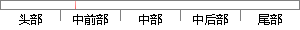

在Web应用方面，MySQL是或最好的关系型数据管理系统，其主要有如下的特性：
片段位置图

相似结果|
相似片段 1：MySQL在Web应用方面表现的十分突出，是Web应用中最好的关系数据库之一。相对于Oracle、MSSQLServer、DB2等大型关系型数据库管理系统，MySQL存在一定的劣势，但是它良好的特性
相似片段 2：Oracle公司【9】。MySQL由于其特性，是目前最流行的关系型数据库管理系统，在WEB应用方面MySQL是最好的RDBMS(RelationalDatabaseManagementSystem，关系
|
※ 片段修改建议 ※
近似词参考：- 应用：利用 运用
- 最好：最佳
- 关系：干系 瓜葛
- 系统：体系
- 如下：以下
- 特性：特征
系统自动生成语句：在Web利用方面，MySQL是或最佳的干系型数据管理体系，其主要有以下的特征：
注：本片段修改建议为系统自动生成，仅供参考。